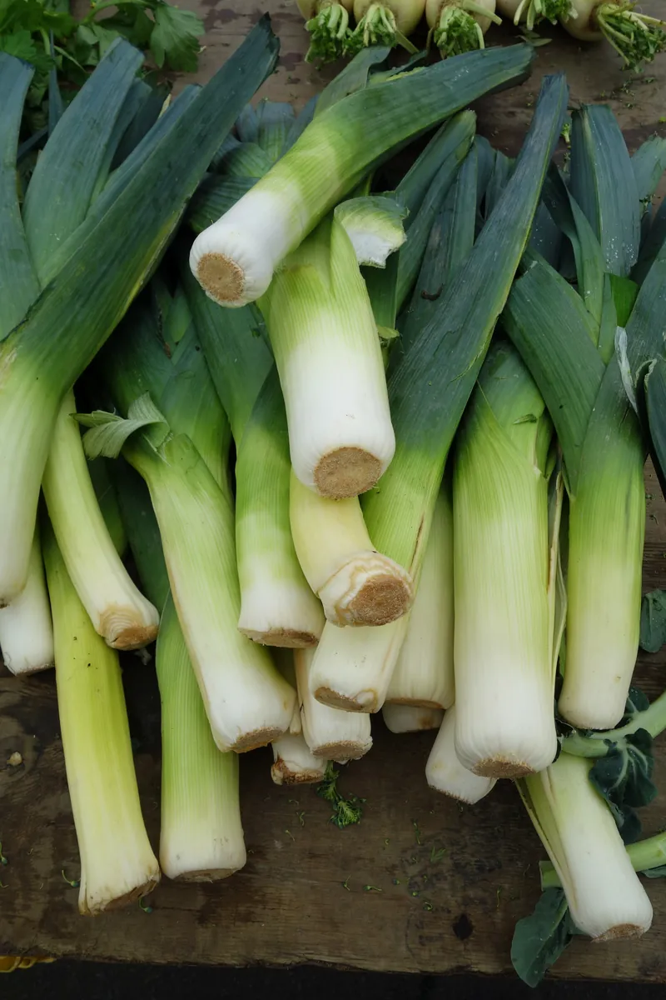
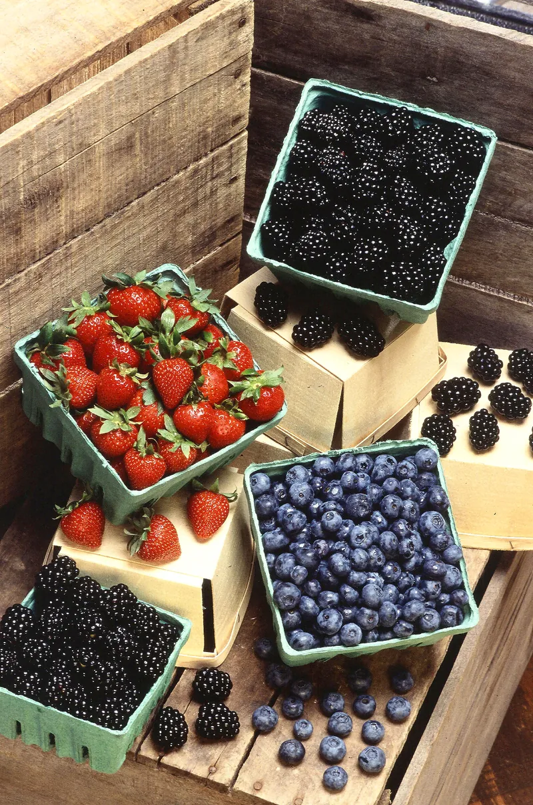

Kitchen Notes · the long guide
Cooking with the seasons: a month-by-month guide
What actually comes in when, how to choose it, how long it keeps, and what to do when you suddenly have far too much of one thing. Written for a zone 6b year in southeastern Pennsylvania and adjustable from there.

Why bother with the calendar at all
A supermarket will sell you a strawberry in January. It will be pale in the middle, it will taste of water and faint perfume, and it will have cost more than the same strawberry costs in June. Nobody is being deceived exactly — the thing is a strawberry — but the recipe you had in mind was written for a different piece of fruit.
That is the whole practical argument for seasonal cooking, and it has nothing to do with virtue. Ingredients in season are cheaper, they taste more like themselves, and crucially they behave the way recipes expect. A September tomato collapses into sauce in twenty minutes; a February tomato takes forty and still tastes thin. When a recipe fails for no obvious reason, the ingredient being out of season is one of the more common explanations and one of the least often considered.
The second argument is that it answers the harder question. Deciding what to cook from an empty head is difficult. Deciding what to cook when there are five pounds of apples on the counter is easy. Shopping by what is good and cooking from what you bought inverts the problem into a much more tractable one.
How to use this guide
The months below are for zone 6b in southeastern Pennsylvania — real winters, last frost around the first week of May, first frost in the middle of October. Shift the whole thing if you are somewhere else. Readers along the Gulf coast run about six weeks ahead of these dates in spring and have a much longer autumn; northern New England and the upper Midwest run three to four weeks behind in spring and get frost a month sooner. The sequence holds everywhere with four seasons even when the dates do not.
March and April: the thin months
Almost nothing new is ready and the stored crops are tired. This is the honest low point of the year and there is no use pretending otherwise.
What is actually good: rhubarb from the middle of April, the first chives and sorrel, and overwintered parsnips, which are genuinely better in March than they were in November because the cold converts their starch to sugar. Asparagus from the end of April if the spring has been kind.
Buying: rhubarb should be firm and squeaky with no flexibility at all; a bending stalk is a week old. Thickness does not matter but colour does for appearance only — green rhubarb tastes the same as red. Asparagus should snap rather than bend, and the cut end should look wet rather than dried and woody.
Keeping: rhubarb lasts a week upright in an inch of water in the refrigerator, or chop and freeze it raw for a year. Asparagus lasts four or five days stood in water with a bag over the tops.
A glut of rhubarb is the only glut these months provide. It freezes raw in one-pound bags with no blanching, and a compote with sugar and a strip of orange peel keeps three weeks in a jar in the refrigerator.
May and June: everything at once, briefly
Lettuces, spinach, peas, the first strawberries around the start of June, and the soft herbs going properly. This is the fastest-moving part of the year; a crop can be perfect one week and bolted the next.
Buying: leaves should be stiff. Any limpness means days in transit. Strawberries must be red all the way to the shoulder — unlike tomatoes or pears they do not ripen after picking, so a pale shoulder stays a pale shoulder. Smell the bottom of the box; if it does not smell of strawberries, they will not taste of them.
Keeping: leaves last a week washed, spun dry and stored with a dry towel in the bag. Strawberries last two days and that is being generous; do not wash them until the moment you use them.
A glut of strawberries is the first real one of the year. Hull them, spread them on a tray, freeze them solid and bag them — they will be worth baking with in December, which is more than can be said for anything in the shops at that point.
July and August: the flood
Blueberries from late June, blackberries and raspberries through July, tomatoes from the middle of July, stone fruit, sweet corn, beans, zucchini in quantities that become a running joke. By the middle of August there is more of everything than anyone planned for.
Buying: buy berries by the flat rather than the pint if there is any chance of baking or freezing; the price per pound drops sharply and you will use them. Tomatoes should be heavy for their size and give slightly all over rather than being soft in one spot. Never refrigerate a tomato you intend to eat raw — below about 55°F the compounds that make it taste of tomato break down and do not come back.
Keeping: berries last three to five days unwashed in a single layer. Tomatoes last a week on the counter, stem side down. Corn starts converting sugar to starch the moment it is picked, so it is a same-day ingredient and everything else is a compromise.
Gluts: this is the season that justifies a freezer. Berries freeze on trays and bag up loose. Tomatoes freeze whole and raw in bags — the skins slip off under warm water later and they are perfect for sauce, though useless for salad. Zucchini, honestly, does not freeze well in any form; grate it, salt it, squeeze it hard and use it the same week.

September and October: the best of it
Apples from late August and running all the way to the hard frost, winter squash from September, pears in a short intense window in early October, the last of the field tomatoes, and the brassicas starting. If there is one part of the year to cook attentively, this is it.
Buying apples: know what you are buying them for. Firm, tart varieties — Granny Smith, Braeburn, Northern Spy, Honeycrisp — hold their shape in a pie or a crumble. Softer ones — McIntosh, Cortland — collapse into sauce in twenty minutes, which is a feature when you want sauce and a problem when you want pieces. Buy both. They should be hard, with taut skin and no give at the stem end.
Buying squash: heavy for its size, hard matte skin you cannot dent with a thumbnail, and the stem still firmly attached and dry. A glossy skin means it was picked early and it will be watery. A missing stem means it will rot from the top within a fortnight.
Buying pears: buy them hard and ripen them on the counter, because a pear ripens from the inside out and one that is soft in the shop is already brown in the middle. Test at the neck, not the belly: when the flesh just below the stem gives to gentle thumb pressure, it is ready, and it will stay ready for about two days.
Keeping: firm apples last six weeks somewhere cold, and they give off ethylene, so keep them away from everything else or they will ripen it. Whole winter squash lasts two to four months at 50°F to 60°F somewhere dry — a cool spare room is better than a refrigerator. Pears last two days once ripe and that is that.
A glut of apples is the easiest one to deal with. Sauce them — peeled, chopped, a splash of water, twenty minutes covered — and freeze in pints. Or bake them. Or just leave them in a bowl somewhere cold and eat them, which is what they are for.
November to February: the long low oven
Roots, cabbage, leeks, keeping apples, and whatever went into the freezer in August. Nothing is in a hurry. The oven is on for warmth anyway, so there is no reason not to have something in the bottom of it.
Buying: roots should be firm with no give and no soft patches where they were cut. Avoid anything that has started to sprout — it is not harmful, but the vegetable is spending its sugar on the sprout and will taste woody. Leeks should be straight and tight, and a leek with a fat round bulb at the base has started to bolt and will have a tough core.
Keeping: most roots last a month in the refrigerator if the tops are cut off, which otherwise draw moisture out of the root. Cabbage keeps for weeks and simply gets peeled back a layer at a time. Keeping apples will see you to February if they are cold enough.
What to cook: this is braising weather, and braises are forgiving in a way that summer cooking is not. An extra twenty minutes does not ruin a pot of red cabbage. Almost everything in this part of the year is better on the second day, which makes cooking on Sunday for Tuesday a sensible habit rather than a chore.
A short note on buying well
Four habits are worth more than any amount of knowledge about varieties.
- Go late. The last hour of a farmers' market is when prices drop and when the person behind the table will tell you what needs using today.
- Buy one thing in quantity rather than six things in ones. A half bushel of apples is cheaper per pound, it forces you to cook, and apples keep. Six single items go soft in the drawer.
- Ask what is best today, not what is available. Those are different questions and growers answer the first one honestly.
- Smell things. It is the most reliable test there is and it costs nothing. If a melon, a strawberry or a bunch of herbs has no smell, it will have no flavour.
What this means for the recipes on this site
Everything here is filed under the season when its main ingredient is actually good, not when you could theoretically obtain it. The recipes page is arranged in that order, and within each season the recipes run roughly in the order the ingredients arrive.
Where a recipe genuinely depends on the ingredient being in season, it says so at the top, and where it does not — which is most baking, most braising, and anything built on store-cupboard ingredients — it says that too. Being told that a dish will be fine in March is as useful as being told that it will not.
Next
- Kitchen Notes — keeping times, substitutions and the three pieces of equipment worth the space.
- All the recipes, by season
- A Thistledown Year — this guide expanded to a month-by-month chapter, with 64 recipes.